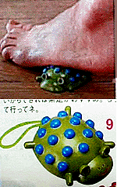
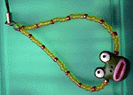

カエルが足げに！カエラーは使えない健康器具！ 【福岡発=天神のハチのＯＬ様】通販のカタログを見ていたら、こんな健康器具を発見したので、急いでご注進いたしましたあっ！『立った途端に土踏まずに吸い付くような快感。木の温もりが気持ちいいから、できれば素足がお奨め』という説明もありました。【全国かえる奉賛会】写真を見ると、テントウムシ型など『３点セットふみふみアニマル１１４０円』ということだ。３つもまとめて売るなんて、よほど売れなかったであろうか。カエルもテントウムシもなにもかも、３種類もあって、とってもお得！なんて、誰も思わないぞ！それに１１４０円という半端な価格設定は、なんなのだろう？！カエラーにとっては、品物が可愛いだけに複雑な心境だ。
というのは、たとえ、カエラーが、ふみふみアニマルを購入したとしてもだ。神聖なカエルを踏みつけに出来るわけがない。まるで、写真のような使用は踏み絵だ。全国のカエラー諸君！カエラー以外のやつらに、踏まれないように、イマスグ、この通販で、ふみふみカエルが、足げにされることがないよう、買い占めようではないかあああ イズノスケ音頭に三波春夫大先生を起用！【静岡発=かえるちゃん様】いつもこころにたいようを、くちびるにうたを。本日は静岡県伊豆地方における「チェンジ伊豆２０００！」についてご報告いたします。スローガンは「伊豆ワカガエル」イメージキャラクターはキュートなカエルの「イズノスケ」なんとあの三波春夫大先生を起用しての「イズノスケ音頭」は１回歌えば１日若ガエルというありがた〜い歌。イズノスケデザインにあたっては「理屈よりもこういったカエルがこれからは愛されると思って」とのカエラーなら大きく納得するコンセプトがあった様子。くわしくはチェンジ伊豆２０００！公式サイトでご覧下さい。 イズノスケのシールも無料配布してました。都内では都道府県会館内・静岡県東京事務所で入手可。気前が良いぞ！伊豆新世紀創造祭実行委員会！  モローストラップ極秘画像を公開！正規着色型は数珠仕様？？【東京発=モロー寺井同志記者】この試作型は、量産ができないので、販売するかどうかは謎だが、もしも、このタイプがラインナップに加わるとしたら、金属型、透明型、標準型の３種類になるであろう。発売日については、カエル新聞を注意して見るべし。リロードして、最新情報を見落とさないようにしよう！
最大級のカーミット発見！！！【神戸発=けろけろさん同志記者】神戸の元町高架下商店街（モトコータウン）を何気なく歩いていたら、なななんと、めちゃ大きいカーミットを発見したぞー。その大きさは１７０ｃｍぐらいでプラスチック製（カエル携帯売り男といい勝負のおおきさ）だ。店の名前は忘れましたぁ。近所の店にウルトラマンが立っていました。（カーミットと同じ位の大きさ。）で、カーミットの値段は￥１００，０００でした。「あなたのお店にいかが？」って書いてありました。フジテレビにカエルの塔が！【福岡発=宮崎兄弟伝読破中様】フジテレビHPのエンタテインメントゾーン内にカエルの塔というゲームがありました。ちなみに私は55秒かかりました。投稿採用者に武功徽章を授与！ |
かえる古新聞過去に取り上げた記事を見出し付きで一覧したい人は、ここをクリック◆創刊号を見る◆先週号を見る◆話題の号を見る◆かえる新聞の昔を読む
|
私も入っています。。全国かえる奉賛会
大王様に会うには、このバナーをクリック。ずっと奥に写真館があるぞ。全国かえる奉賛会に入会するには、自分のホームページのどこかに、下の部分を追加するとバナーがリンク付きで表示されるぞ。どんどん入会しましょー |


|